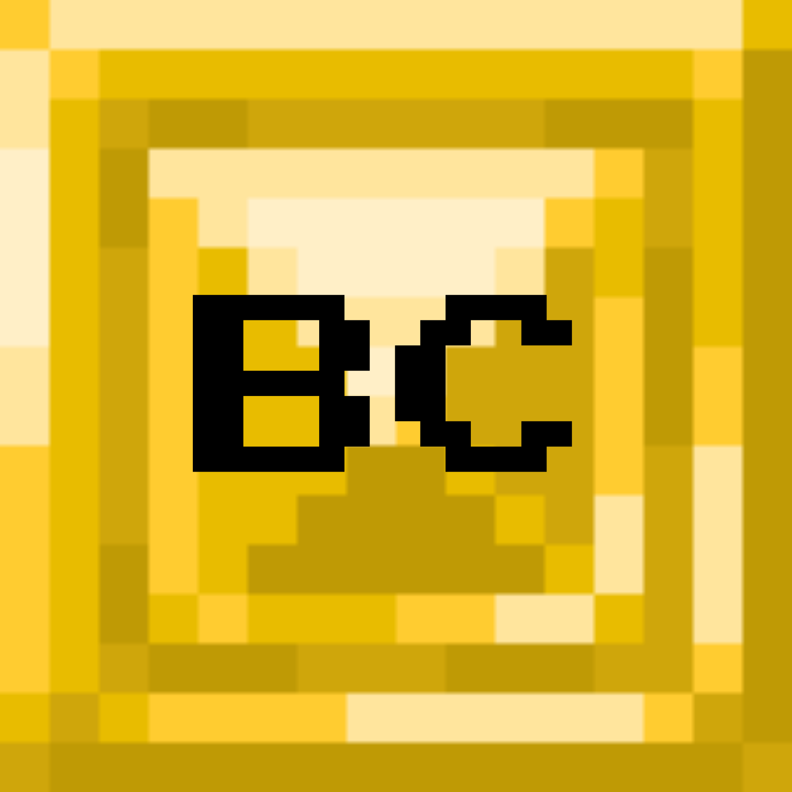
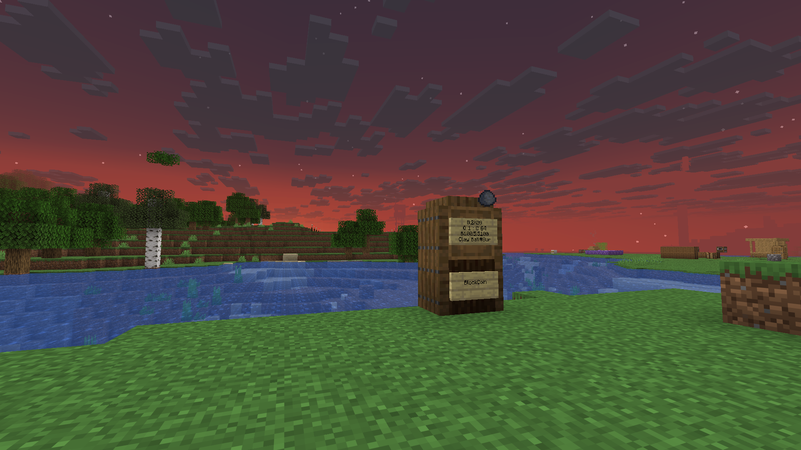

BlockCoin is an item based currency operated by WhimsiCube_ on the DemocracyCraft Minecraft server. Although it has a price of DC$100, it is a great way to carry large sums of money in your inventory, or even gift to your friends and family!
You can trade BlockCoin at every airport in the Wilderness.

BlockCoin ATM
These are the ATM locations below:
| Sandy Shores | -2872 63 -5479 |
| Geographe | 6123 71 -103 |
| Victoria Forest | -3562 63 4340 |
| Central Flats | -648 102 -403 |
| April Meadows | 3427 69 -6207 |
| Stirling Range | 4481 64 3867 |
| Quaker Forest | -6323 63 487 |
Unlike most item-based currencies on DemocracyCraft, BlockCoin has multiple locations around the wild; accessible at every airport. We have a flat $0.50 purchase fee ($0.50 per $100 BlockCoin), so you're not losing out too much on a large purchase of BlockCoin.
If you buy BlockCoin directly from other players, always make sure you have real BlockCoin before paying them. You can do this by running /iteminfo while holding the item in your hand. It should appear as "Clay Ball#8ur". If it does not appear as this, do not purchase it.
If you have any further questions, please feel free to reach out using /msg WhimsiCube_, if I am not online, use /mail send WhimsiCube_ and I will answer or assist you in any way necessary.